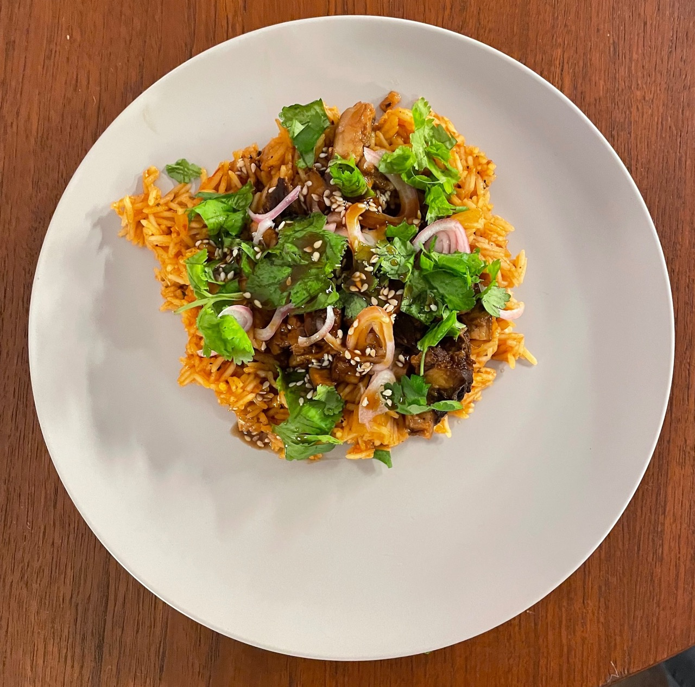

Cajun Pork and Rice
Sunday 19, March 2023
 This recipe is heavily inspired by the cochon de lait I get at a local Austin restaurant, Vic and Al’s. Sadly I can’t spit-roast a pig in my apartment, but I do have a great pork chashu recipe I make that always has enough pork for multiple meals — hence the need for something that isn’t ramen. There’s still some work to do balancing things out, all quantities are estimations since I don’t really measure out anything besides the rice and water.
Pork¶
Prepare the pork a day in advance. Substitute white wine for sake. To reheat, shred the pork and place in a small sauce pan with some of the braising liquid on low for 10 minutes.
Rice¶
Ingredients¶
- 2 tbs butter
- 1/2 a white onion, diced
- 2-3 cloves of garlic
- 1 tsp paprika
- 1/2 tsp celery salt
- 1/2 tsp chili powder
- 1/2 tsp red pepper flakes
- 1/2 tsp rubbed sage
- 1/2 tsp marjoram
- 1/2 tsp black pepper
- 1/4 cup crushed tomatoes
- 1 tbs salsa
- 1 tsp bouillon
- 2 cups water
- 2-3 sprigs of thyme
- 1 bay leaf
- 1/2 dried ancho chili
- 1 cup basmati or other long grain rice
Instructions¶
- In a medium sauce pan heat the butter over medium-high. Add the diced onion and cook until slightly translucent
- Add the garlic and dried spices, cook until fragrant ~30 seconds to a minute
- Add the crushed tomatoes and salsa. Allow to cook for 2 minutes
- Add the bouillon, water, thyme, bay leaf, and ancho chili; bring to a boil
- Reduce heat to a simmer and add rice. Cook, covered, for 15 minutes until rice is fluffy
Toppings¶
Pickled shallots¶
- 1 shallot, thinly sliced
- 1/2 cup vinegar
- 1/4 cup water
- 1 tsp salt
Combine all the ingredients in a small container and let sit
Sauce¶
- 2 tbs hoisin sauce
- 1 tbs apple cider vinegar
- 3 tsps sesame seeds
- 1/4 tsp (or less) sesame oil
Combine all ingredients in a small bowl, mixing well
Cilantro¶
- 3 tbs cilantro, chopped
This one is really just the ingredient, quantity adjusted to taste
Final prep¶
Once everything is prepared, serve the rice topped with the pork, pickled shallots, sauce, and cilantro